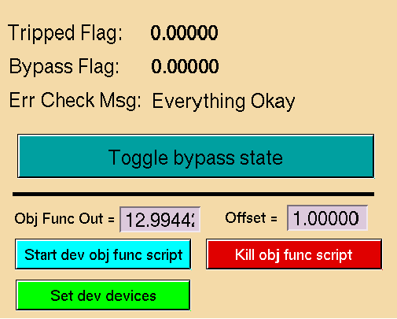

Project Structure¶
This section details information about the most important files and classes used int the project
OcelotInterface Main File¶
optimizer.generic_optim.OcelotInterfaceWindow
def scan_method_select(self):
"""
Sets scanner method from options panel combo box selection.
This method executes from the runScan() method, when the UI "Start Scan" button is pressed.
:return: Selected scanner object
These objects are contrained in the scannerThreads.py file
"""
index = self.ui.cb_select_alg.currentIndex()
#GP Method
if index == 1:
minimizer = mint.GaussProcess()
# Custom Minimizer
elif index == 2:
minimizer = mint.CustomMinimizer()
# Conjugate Gradient
#if index == 3:
# scanner = scanner_threads.OcelotScanner(parent=self, method='cg')
#
## Powells Method
#if index == 4:
# scanner = scanner_threads.OcelotScanner(parent=self,method='powell')
#simplex Method
else: #index == 0:
minimizer = mint.Simplex()
return minimizer
The scan_method_select() method returns a threaded scanner object from mint/mint.py
optimizer.generic_optim.OcelotInterfaceWindow.scan_method_select
def start_scan(self):
"""
Method to start/stop the Optimizer.
"""
self.scanStartTime = time.time()
if self.ui.pb_start_scan.text() == "Stop scan":
# stop the optimization
self.opt.opt_ctrl.stop()
# Save the optimization parameters to the database
self.save2db()
del(self.opt)
# Setting the button
self.ui.pb_start_scan.setStyleSheet("color: rgb(85, 255, 127);")
self.ui.pb_start_scan.setText("Start scan")
return 0
self.pvs = self.ui.widget.getPvsFromCbState()
self.devices = self.ui.widget.get_devices(self.pvs)
if len(self.devices) == 0:
self.error_box(message="Check Devices")
return 0
self.setUpMultiPlot(self.devices)
self.multiPvTimer.start(100)
# set the Objective function from GUI or from file mint.obj_function.py (reloading)
self.set_obj_fun()
# Set minimizer - the optimization method (Simplex, GP, ...)
minimizer = self.scan_method_select()
# configure the Minimizer
if minimizer.__class__ == mint.GaussProcess:
minimizer.seed_iter = self.ui.sb_seed_iter.value()
minimizer.seed_timeout = self.ui.sb_tdelay.value()
minimizer.hyper_file = self.hyper_file
elif minimizer.__class__ == mint.Simplex:
if self.ui.cb_use_isim.checkState():
minimizer.dev_steps = []
for dev in self.devices:
if dev.simplex_step == 0:
lims = dev.get_limits()
rel_step = self.ui.sb_isim_rel_step.value()
minimizer.dev_steps.append((lims[1] - lims[0])*rel_step/100.)
else:
minimizer.dev_steps = None
self.max_iter = self.ui.sb_num_iter.value()
minimizer.max_iter = self.max_iter
# Optimizer initialization
self.opt = mint.Optimizer()
# Option - set best solution after optimization or not
self.opt.set_best_solution = self.ui.cb_set_best_sol.checkState()
self.set_m_status()
self.opt_control.m_status = self.m_status
self.opt.opt_ctrl = self.opt_control
self.opt.timeout = self.total_delay
self.opt.minimizer = minimizer
seq = [mint.Action(func=self.opt.max_target_func, args=[self.objective_func, self.devices])]
self.opt.seq = seq
#self.opt.eval(seq)
self.opt.start()
# Setting the button
self.ui.pb_start_scan.setText("Stop scan")
self.ui.pb_start_scan.setStyleSheet("color: red")
LCLS Interface File¶
This file is used a wrapper to translate between reqeusts by the optimizer and the control system. It also serves to hold the scan data, as well as perform normalization and unformalization for the optimzer class.
OcelotInterface.mint.lcls_interface
Getters and Setters
Basic getter and setter methods using epics: The SASE or objective function measurment is done in a separate method for averageing over the BSA waveform.
Getter function
def get_value(self, channel):
"""
Getter function for XFEL.
:param channel: (str) String of the devices name used in doocs
:return: Data from pydoocs.read(), variable data type depending on channel
"""
val = pydoocs.read(channel)
return val["data"]
Setter function
def set_value(self, channel, val):
"""
Method to set value to a channel
:param channel: (str) String of the devices name used in doocs
:param val: value
:return: None
"""
pydoocs.write(channel, val)
return
Saving Data
Durring a scan the XFELMachineInterface is used to save data for evey step in the scan. The function get_sase() is used to trigger a save event. Everytime an optimizer object calls this funciton, data is saved for the setpoint of every devices and the objective funciton. OcelotInterface.mint.lcls_interface.get_sase
When a scan is finished, the data is written to a file in the matlab data directory using a module “matlog.py” imported from the python toolbox.
Normalization
def normalize(self, corrector, x):
"""
Transform to normalized data for optimizer input.
Args:
correcter: pv name of the devices
x: the input x val to be normalized
Returns:
Float normalized value of x
"""
if(Taper().isTaperPV(corrector)):
mu = self.taperParams[corrector][0]
sig = self.taperParams[corrector][1]
y = (float(x) -mu)/(sig)
print ("SCALED TAPER",y)
return y
if not self.norm_params_bool:
return x
mu = self.inputNormParams[corrector][0]
sig = self.inputNormParams[corrector][1]
y = (float(x)-mu)/(sig)
print ("NORMALIZED",y)
return y
In order to caput optimizer output back to the control system, a similar unnormalize funcion is used.
Scanner Threads File¶
OcelotInterface.scannerThreads
Ocelot Scanner
GP Scanner
Reset Panel Module¶
OcelotInterface.resetpanel.resetpanel
| This version subclasses resetpanel and adds in the active checkbox column
OcelotInterface.resetpanel.resetpanelbox
epicsGet Class¶
Parameters and File IO¶
GP File IO¶
The program needs to be able to pull information from external files in order to work correctly, based on the input for parameter files and settings in the options panel.
Ocelot Normalization Parameters¶
The Ocelot scipy based scanners use the normalization parameters located in ./parameters/normParams
These parameters are auto generated from the historical ranges of the devices. Format: PVNAME,MEAN,STD
Load funciton OcelotInterface.scannerThreads.OcelotScanner.loadNormFile
Hyperparameters
OcelotInterface.scannerThreads.GpScanner.loadHyperParamsdata[{“3”: {“PV1”: [AVE,STD], “PV2”: [AVE,STD], “PVN”: [AVE,STD] }{“4”: {“PV1”: [AVE,STD], “PV2”: [AVE,STD], “PVN”: [AVE,STD] }......{“16”: {“PV1”: [AVE,STD], “PV2”: [AVE,STD], “PVN”: [AVE,STD] }]
OcelotInterface.scannerThreads.GpScanner.calcLengthScaleHPOcelotInterface.scannerThreads.GpScanner.calcAmpCoeffHPOcelotInterface.scannerThreads.GpScanner.calcNoiseHPUnderstanding how these hyperparameters affct the optimizer is a bit tricky. What we have found is that typically the length scales determine the step size that GP will take when choosing a new point. The amplitude coefficent seems to determine how much the scanner will explore versus stay on a local maximum. The noise parameter determines how much of the obj func measured is accounted for by random fluctuation and noise from the beam. We have usually letf this constant, using the log of the GDET standrard deviation.
Matlab Seed File
Load funciton OcelotInterface.scannerThreads.GpScanner.loadSeedData
{kind=link}
Example of data from a Ocelot Scan. This data is formated into a matrix and feed into the GP
Calculating Parameters with the archiveRetrieve Module¶
The mean and standard deviation used in the IO files above are generated in a script named energySeparation.py. More detailed informatino on this is located in the readme file within the module. The module is located in the python toolbox /usr/local/lcls/tools/python/toolbox
- 1). Check out the files from CVS into a directory (or use the existing one in /home/physics/tcope/cvswork/tools/python/toolbox/archiveRetrieve)
- 2). Edit the “parameter.py” file to add in the PVs and time ranges you want to get history data for
- 3). Execute the “generateDataSet.py” file. This generates raw data in the ”./data” folder for the PVs specified.
- 4). Edit the “energySeparation.py” file to add in PVs you want to generate mean and std data for. Kind of redundant with step 2, but necessary.
- 5). Execute the energySeparation.py file to generate the hyperparameter.npy file. Then copy the file into the OcelotInterface/parameter folder.
Ocelot Developmeng and Test Mode¶
This describes the process of running ocelot in development mode, in order to test new algorithms or debugging. To do this 4 dev matlab PVs are used as dummy devices, and te GUI reads in a linear objective function is place of the GDET.
The main function contains a boolean ‘devmode’ to turn the development mode on and off. If devmode is true, the GUI loads up the dev device PVs and reads in the and objective function from the PV “SIOC:SYS0:ML00:CALCOUT993”. A script to start this output can be started from the blue button on the edm dev panel.
This is the function that is executed when you choose dev mode. You can change options here depending on what you are testing.
{kind=link}
This is the edm development panel that controls the y funciton read in durring dev mode.